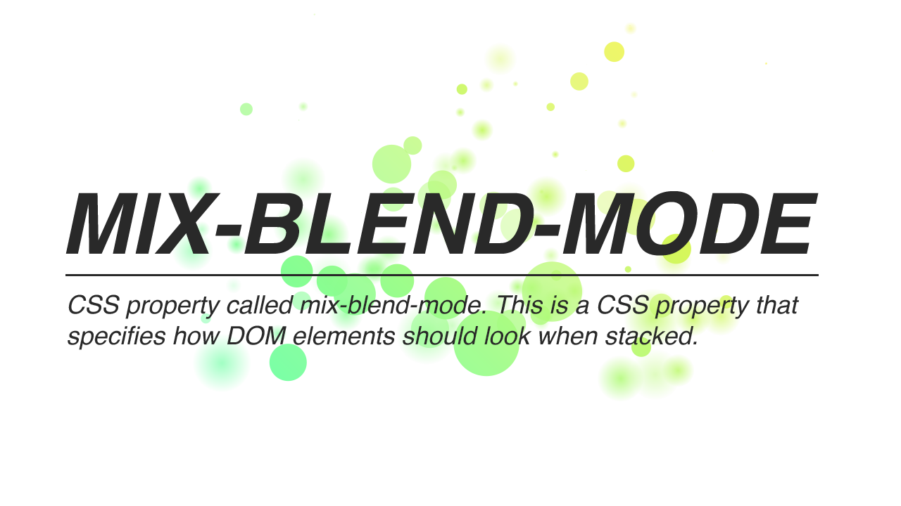

mix-blend-mode: plus-lighter Example
Opacity Transition

/ {{Math.round(percent * 100)}} %
mix-blend-mode:
plus-lighterだと、クロスフェードの途中での背景透過を防げます。とくに黒文字部分の透過について注目ください。normalだと半透過するのに対して、plus-lighterでは不透過のままです。
Slideshow
mix-blend-mode:
plus-lighterだと、クロスフェードの途中での背景透過を防げます。
Created by IKEDA Yasunobu, © ICS INC.